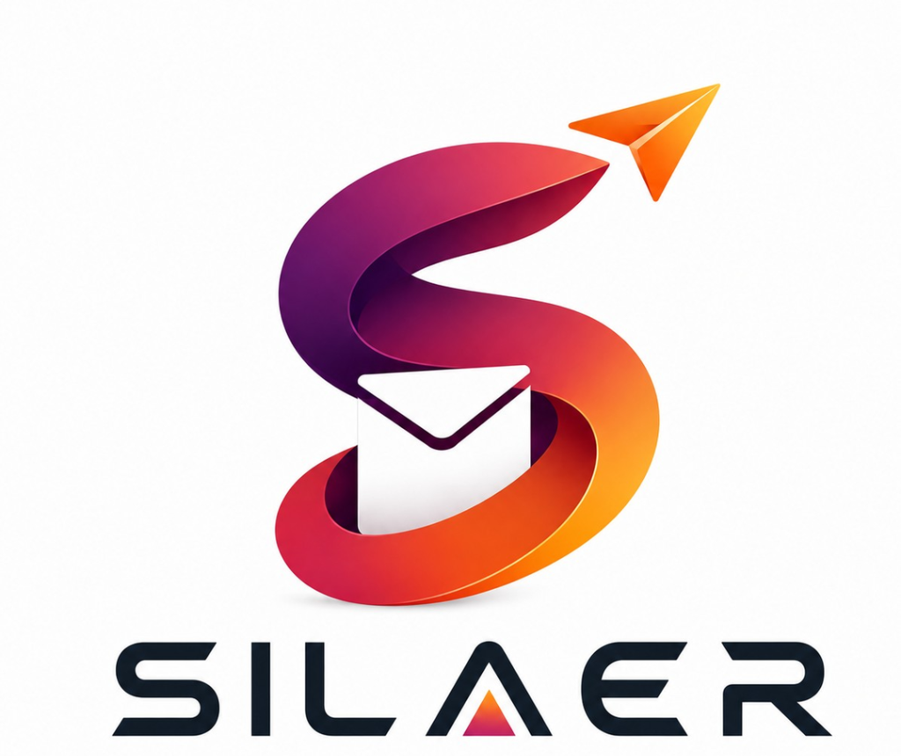

01 / FLAGSHIP PRODUCT

THE FAST INBOX
IN PROGRESS ↗
Silaer
Most email and messaging tools are slow, cluttered, and distracting. I'm building Silaer to fix that — an ultra-fast, keyboard-first inbox designed to get you in, done, and back to your work.
Under the hood, it pairs a distraction-free interface with a local-first SQLite sync engine for instant search and offline-first speed. Built from the ground up to explore what a modern communication tool should feel like.
Ask me about Silaer ↗